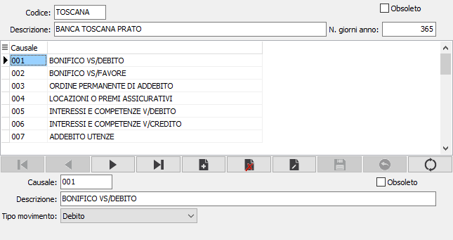

Banche
La tabella consente di memorizzare gli istituti bancari per i quali sono presenti dei conti correnti; per ogni banca possono essere inserite le relative causali da utilizzare per la movimentazione dei singoli conti correnti che saranno associati alla banca tramite le condizioni operazioni c/c.

CODICE: codice alfanumerico di 8 caratteri che individua la banca. Sul campo sono attive le funzioni di ricerca sulla tabella stessa.
DESCRIZIONE: campo alfanumerico di 50 caratteri per descrivere la banca.
N. GIORNI ANNO: indica il numero dei giorni dell'anno utilizzati per i conteggi.
OBSOLETO: flag attivabile dall’utente per inibire il possibile utilizzo dell’elemento di tabella in esame nelle successive transazioni.
Causali
CODICE: codice alfanumerico della causale di movimentazione. Sul campo sono attive le funzioni di ricerca sulla tabella stessa.
DESCRIZIONE: campo alfanumerico di 50 caratteri per descrivere la causale.
TIPO MOVIMENTO: determina la tipologia del movimento: credito o debito.
OBSOLETO: flag attivabile dall’utente per inibire il possibile utilizzo dell’elemento di tabella in esame nelle successive transazioni.